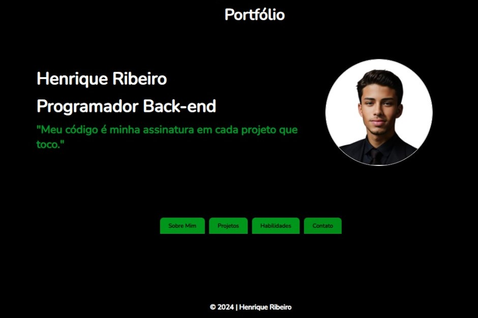

Meu nome é Henrique Ribeiro de Lima Oliveira, tenho 16 anos e
estou atualmente no ensino médio. Desde cedo, desenvolvi um interesse
apaixonado pela programação, especialmente focado no desenvolvimento
back-end. Atualmente, estou estudando HTML,
CSS,
JavaScript e Python, participando de cursos e
dedicando meu
tempo diariamente para praticar e aprimorar minhas habilidades. Durante meu aprendizado, tenho
desenvolvido pequenos scripts e sites básicos, explorando a
aplicação prática das linguagens que estudo. Esses projetos não só apenas consolidam meu
conhecimento técnico, mas também me desafiam a buscar soluções criativas e eficientes. Meu
objetivo é continuar explorando as possibilidades do desenvolvimento back-end, expandindo meu
conhecimento em linguagens e frameworks que são fundamentais para criar
aplicações robustas e
escaláveis. Estou animado para ver como essas habilidades podem contribuir para meus objetivos
acadêmicos e futuro profissional.

Desenvolvi este portfólio utilizando HTML para a estrutura, CSS para a estilização e
JavaScript
para a interatividade. Ele apresenta minhas habilidades e projetos em um formato
organizado, com
seções dedicadas a "Sobre Mim", "Projetos", "Habilidades" e "Contato".